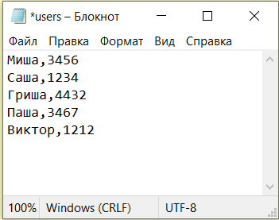
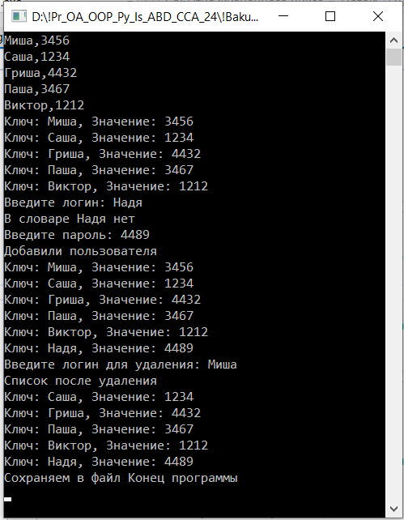
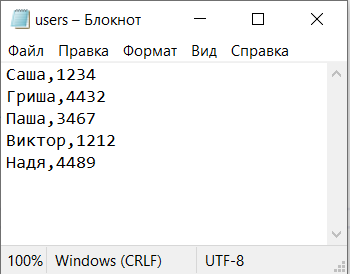

| Контрольная работа 7. Работа со словарем в C# | ||
| Назад | ||
|
Задание 5. Создание словаря из текстовых данных: У вас есть текстовый файл с данными в формате «ключ: значение» например: ключ: логин. значение: пароль. Для составления программы использовать меню. 1. Прочитать файл InDic. 2. Создайте словарь, обработав данные из файла. 3. Вывести данные словаря на экран. 4. Добавить элемент в словарь. (логин, пароль) учесть проверку логина на уникальность 5. Вывести результат добавления в словарь на экран. 6. Удалить пару по значению логина 5. Вывести результат после удаления на экран. 8. Сохранить отредактированный словарь в файл OutDic. Исходный файл
 Работа программы
 Результат сохранения в файле

|
||
| Конспект подготовлен Бакулиным А. М. 2012 год. | ||